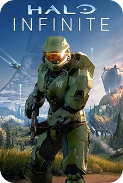

Princpais empresas
A Xbox foi criada pela Microsoft e lançada em 2001, entrando no mercado de videogames para competir com empresas como Sony e Nintendo. Seu primeiro console trouxe jogos marcantes, como Halo: Combat Evolved. Ao longo dos anos, a marca lançou novas gerações, como Xbox 360, Xbox One e Xbox Series X|S, investindo em gráficos, desempenho e jogos online. Atualmente, a Xbox também se destaca pelos serviços digitais, como o Game Pass, que oferece acesso a uma grande biblioteca de jogos.

Halo é uma franquia de jogos criada pela Bungie e lançada em 2001, sendo um dos principais títulos da história do Xbox. A história acompanha o Master Chief, um supersoldado que luta para proteger a humanidade contra uma aliança de espécies alienígenas chamada Covenant. A série ficou conhecida por sua história envolvente, batalhas espaciais, multiplayer competitivo e por revolucionar os jogos de tiro em primeira pessoa nos consoles.

Gears of War é uma franquia de jogos criada pela Epic Games e lançada em 2006, inicialmente exclusiva para Xbox. A história se passa no planeta Sera, onde a humanidade enfrenta uma ameaça subterrânea chamada Locust. O jogador acompanha Marcus Fenix e seus companheiros em batalhas para salvar a humanidade. A franquia ficou conhecida por seus gráficos marcantes, ação intensa e sistema de combate baseado em cobertura, tornando-se uma das principais séries de jogos da Xbox.